Como funciona o novo site de pedidos e o painel da loja: do pedido do cliente até o faturamento do dia.
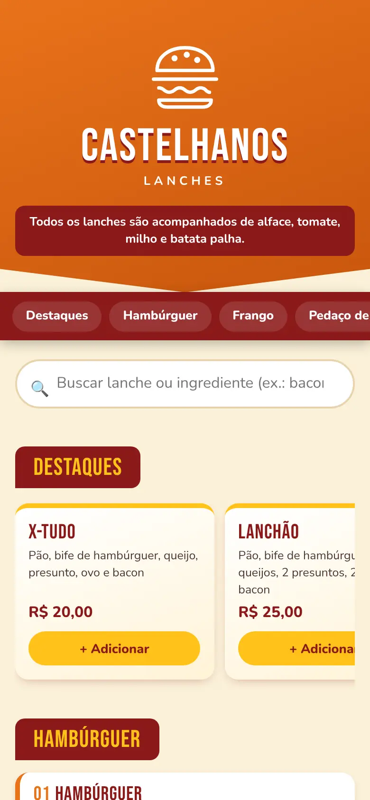
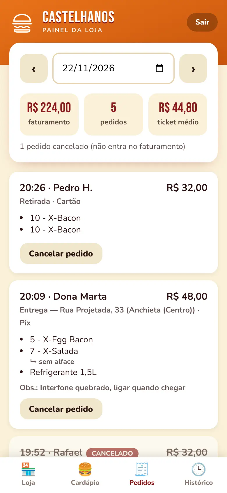
São duas partes: o site, onde o cliente vê o cardápio e monta o pedido, e o painel, onde a loja controla tudo. As duas conversam em tempo real.
Escolhe os lanches, tira ingredientes de cada um, informa entrega ou retirada e o pagamento.
Vai pronto para o WhatsApp da loja e, ao mesmo tempo, aparece no painel com aviso de novo pedido.
Fecha a loja quando precisar, marca o que acabou, acompanha os pedidos e o faturamento do dia.
O cliente não precisa baixar nada nem criar conta. Abre o link (pelo Instagram ou WhatsApp) e pede.
Toca no + para adicionar. Os mais pedidos ficam em destaque no topo, e dá para buscar por nome ou ingrediente (ex.: “bacon”).
Se pedir dois X-Tudo, pode tirar o tomate de um só. Cada lanche tem seus botões “sem alface”, “sem milho”…
Na entrega, escolhe o bairro e a taxa já entra no total automaticamente.
Pix, cartão ou dinheiro (com troco). Ao tocar em Enviar pedido no WhatsApp, a mensagem chega pronta e organizada para a loja.
Nome, endereço e bairro ficam salvos no celular dele para o próximo pedido.
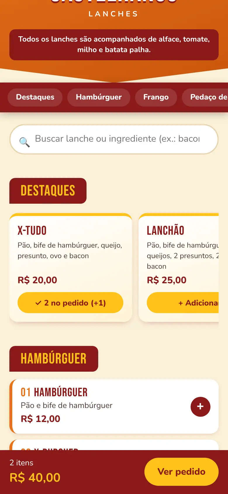
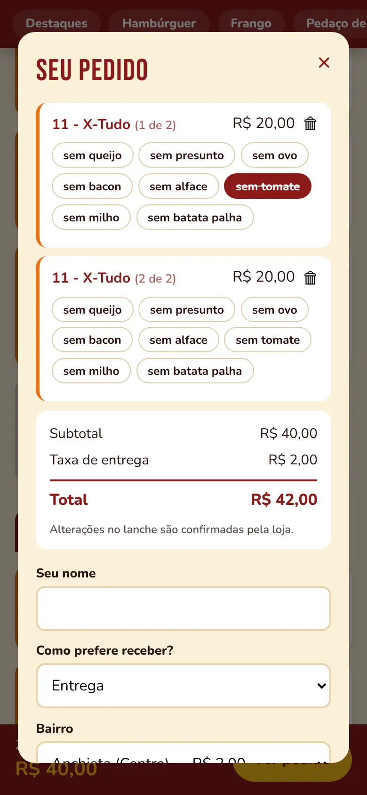
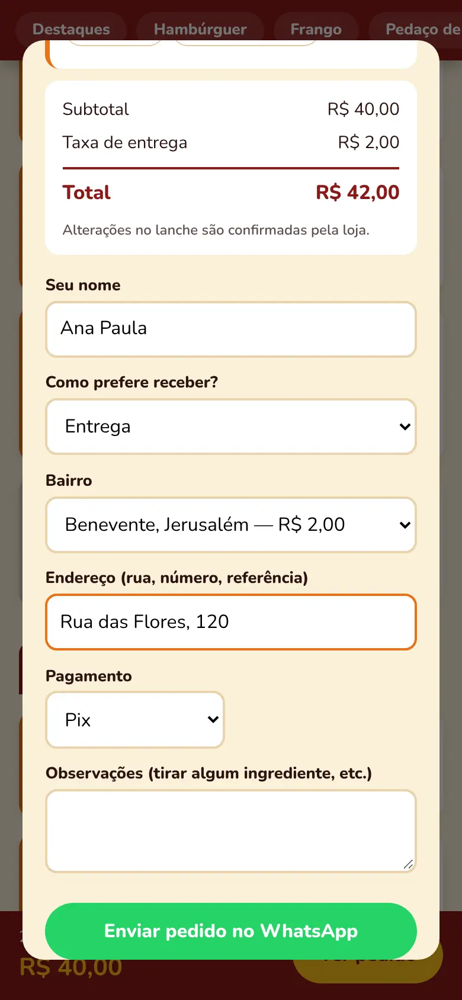
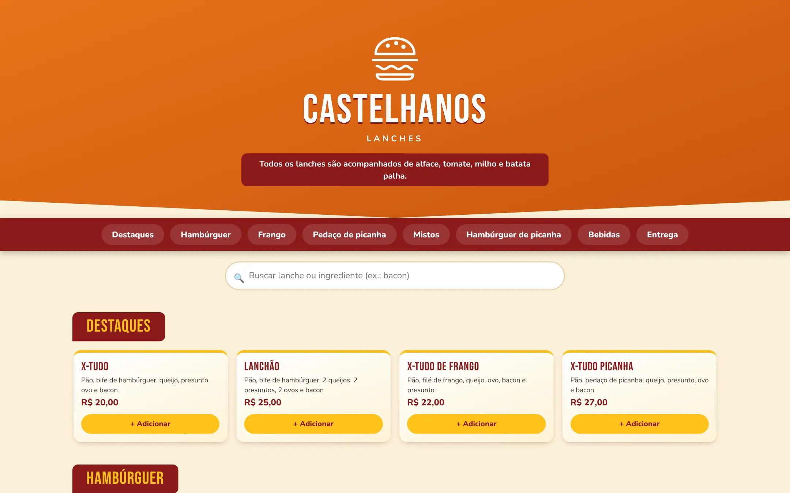
No computador o site também se ajusta, com o cardápio em duas colunas.
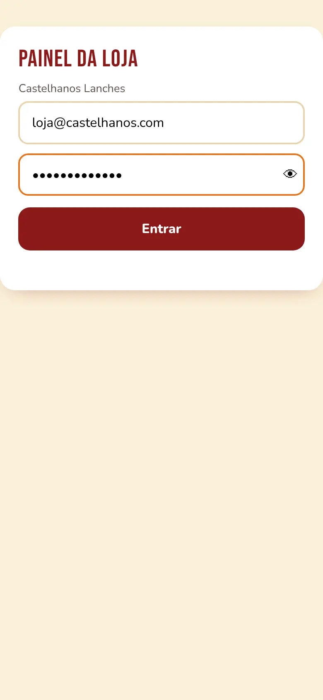
sitesvictor.github.io/castelhanos-lanches/admin.html
E toque em Entrar. O acesso fica salvo naquele aparelho até tocar em Sair.
Loja, Cardápio, Pedidos e Histórico. No computador elas ficam na lateral.
Para exceções: fechar mais cedo, chuva forte, acabou o pão. Os dias e horários normais de funcionamento serão configurados no site com vocês.
O cartão verde mostra que a loja está recebendo pedidos.
30 min, 1 hora, 2 horas, só hoje ou até reabrir. Com tempo definido, a loja reabre sozinha.
“Chuva forte”, “Imprevisto”… ou escreva o seu. O cliente vê esse aviso.
O cartão fica vermelho. Para voltar antes, toque em Reabrir agora.
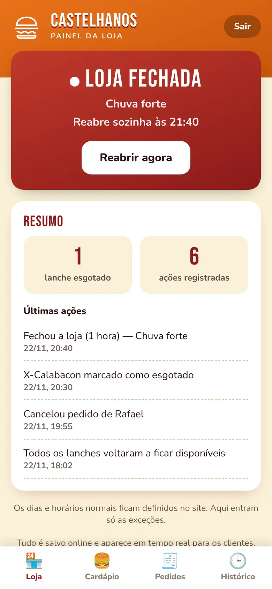
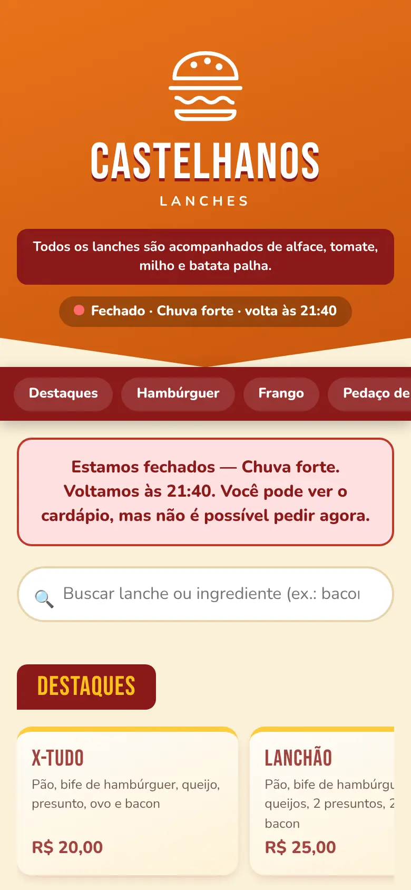
Acabou a calabresa? Desligue o lanche e ninguém consegue pedir até você ligar de novo.
Digite parte do nome ou role a lista, separada por categoria.
Fica vermelha e o lanche aparece como Esgotado para o cliente.
Ou use Marcar todos como disponíveis para liberar tudo de uma vez, por exemplo ao abrir.
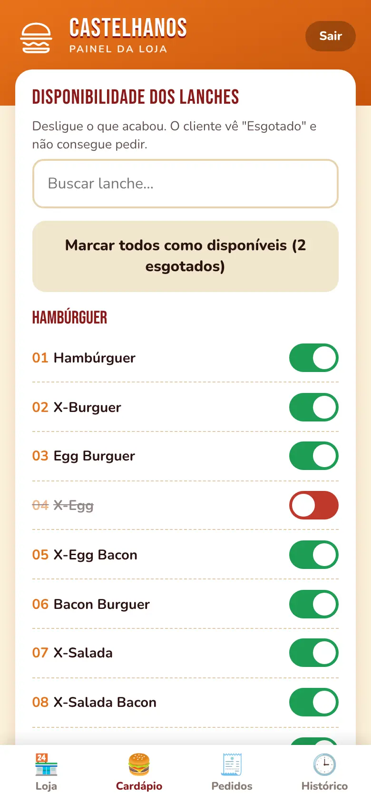
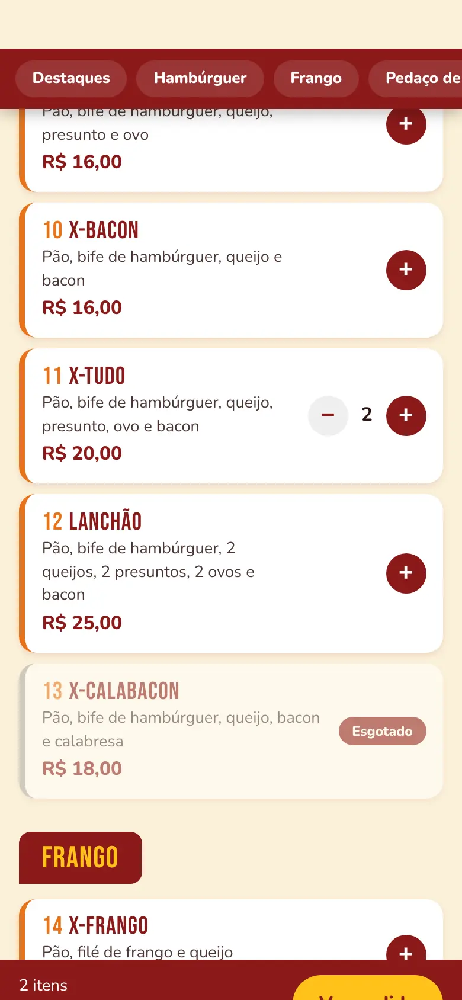
Todo pedido enviado pelo site fica registrado aqui. É o levantamento do dia pronto, sem anotar nada.
Novo pedido aparece no topo com o aviso 🔔 Novo pedido! Não precisa atualizar a página.
Horário, nome, entrega (endereço e bairro) ou retirada, pagamento e troco, itens com as alterações e observações.
Toque em Cancelar pedido e confirme. Ele fica riscado e sai do faturamento. Foi engano? Reativar pedido.
Use as setas ‹ › ou o calendário para consultar qualquer dia anterior.
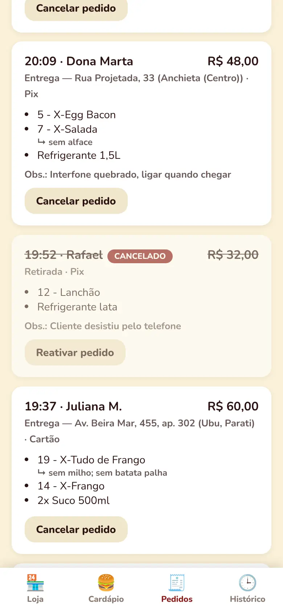
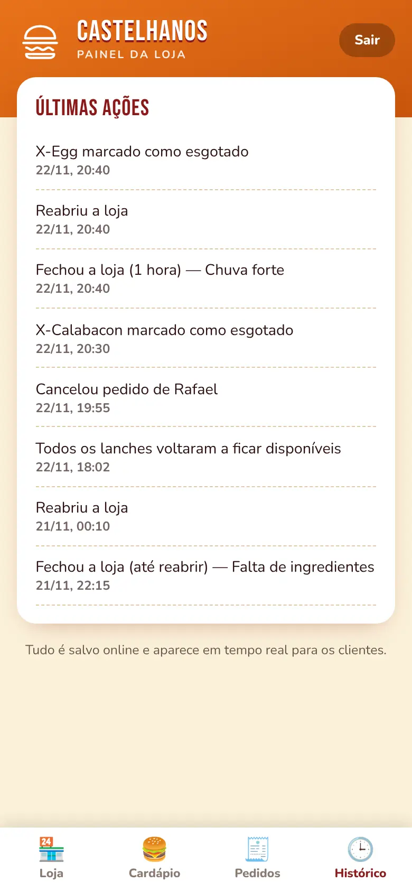
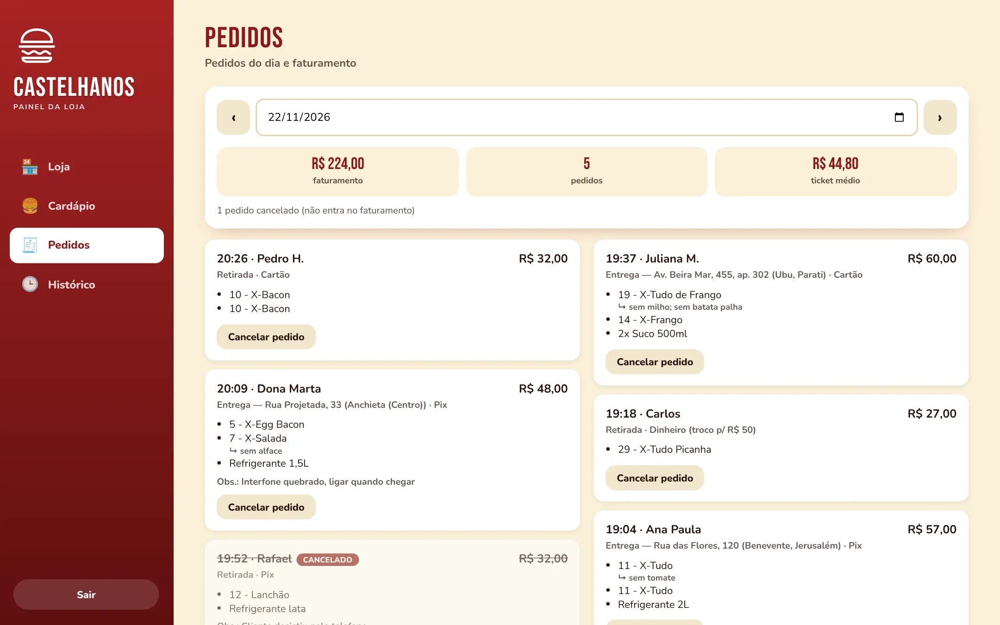
No computador do balcão, o painel mostra os pedidos em duas colunas com o menu na lateral.
Três momentos rápidos que mantêm o site sempre certo para o cliente.
Sim. O WhatsApp continua sendo o canal de atendimento. O painel é o registro organizado para acompanhar e somar o faturamento.
O pedido é registrado no painel no momento em que ele toca em “Enviar pedido no WhatsApp”. Se depois ele desistir de mandar a mensagem, o pedido aparece no painel mesmo assim: nesse caso, é só cancelar.
Sim. Pode estar aberto no celular do dono e no computador do balcão; tudo atualiza nos dois na hora.
Se você escolheu um tempo (30 min, 1 hora, 2 horas ou só hoje), ela reabre sozinha. Se escolheu “até eu reabrir”, entre no painel e toque em “Reabrir agora”.
Sim, mas por enquanto isso é feito por quem cuida do site. É só avisar o que mudou.
Confira a internet e atualize a página. Se pedir login de novo, entre com o e-mail e a senha da loja.
O site e o banco de pedidos estão em planos gratuitos, que atendem com folga o movimento de uma lanchonete.